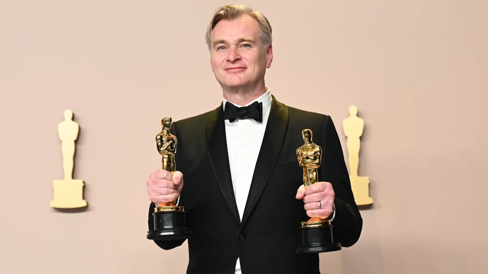
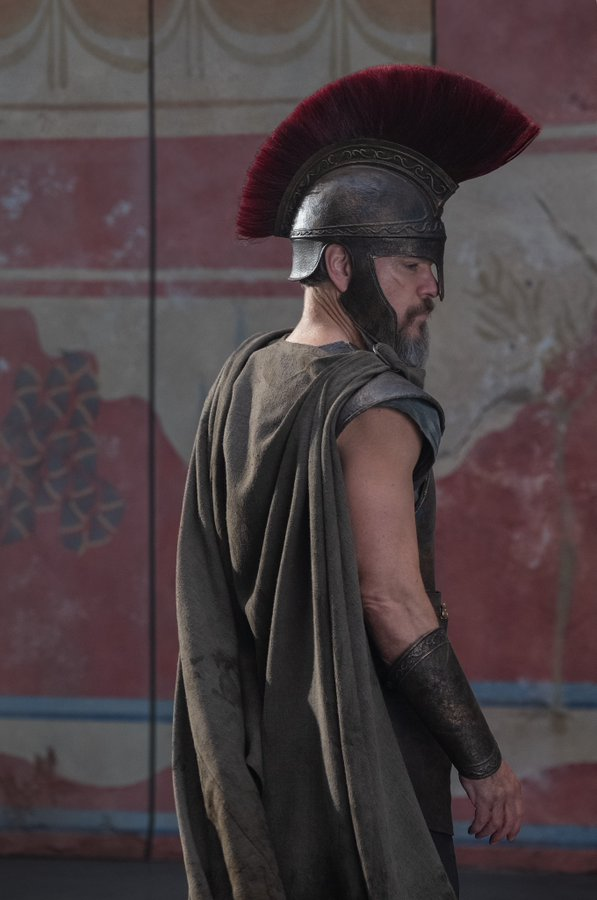

Une première image du nouveau film de Christopher Nolan, The Odyssey !
Une épopée légendaire revisitée
Parmi les récits les plus emblématiques de la mythologie grecque, L’Odyssée d’Homère est une œuvre qui traverse les âges. Elle raconte le périple d'Ulysse, héros de la guerre de Troie, tentant désespérément de rentrer chez lui, à Ithaque, après dix années de conflits. Son voyage est semé d’embûches : dieux capricieux, monstres redoutables et épreuves périlleuses, le tout s’étalant sur une décennie supplémentaire avant qu’il ne retrouve enfin son épouse, Pénélope.
Qui est Christopher Nolan ?
Considéré comme l’un des cinéastes les plus influents de sa génération, Christopher Nolan s’est fait connaître grâce à des films aussi marquants que Inception, Interstellar, ou encore The Dark Knight. Maître du récit complexe et des effets pratiques spectaculaires, il a récemment frappé fort avec Oppenheimer, retraçant la création de la bombe atomique. Avec The Odyssey, il se lance dans un tout nouveau défi : un péplum mythologique à grand spectacle.
Un projet titanesque pour Nolan
Après Oppenheimer, où il retraçait la vie du père de la bombe atomique dans un biopic de trois heures, Christopher Nolan voit encore plus grand. Cette fois, il s'attaque à l'adaptation de L’Odyssée d’Homère, un défi ambitieux avec un budget estimé à 250 millions de dollars. Fidèle à son approche, le cinéaste misera sur un maximum d’effets pratiques et du tournage en IMAX.
Un casting légendaire
Pour incarner les figures mythologiques de cette épopée, Nolan s’est entouré d’un casting impressionnant :
- Matt Damon dans le rôle d'Ulysse, héros grec tentant de rentrer chez lui après la guerre de Troie.
- Tom Holland, Anne Hathaway, Jon Bernthal, Robert Pattinson, Charlize Theron, Zendaya, Mia Goth, Elliot Page, Lupita Nyong’o, John Leguizamo et Benny Safdie font également partie de l’aventure, bien que leurs rôles n’aient pas encore été dévoilés.
Un premier aperçu intrigant
Universal, désormais la maison de Nolan après sa séparation avec Warner Bros., a révélé une première image du film. On y découvre Matt Damon dans une tenue qui rappelle celle des centurions romains, un choix surprenant pour une histoire ancrée dans la mythologie grecque antique.
Ce premier visuel confirme que The Odyssey ne sera pas une relecture moderne ou futuriste du mythe, mais bien un péplum se déroulant dans l’Antiquité. Un changement notable pour Nolan, dont les films ont majoritairement exploré le 20ᵉ et 21ᵉ siècle, à l'exception de Le Prestige, qui plongeait dans la fin du 19ᵉ siècle.
@UniversalPictures Sur X
Rendez-vous en 2026
L'attente sera longue, mais l’épopée de Nolan a déjà tout pour marquer les esprits. The Odyssey sortira en France le 15 juillet 2026.